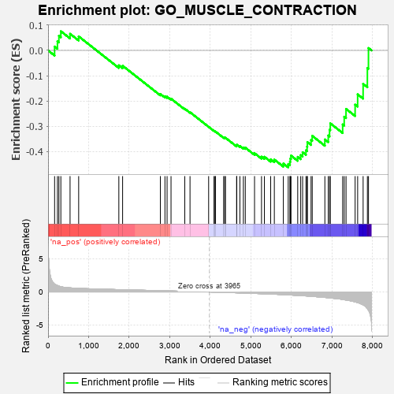
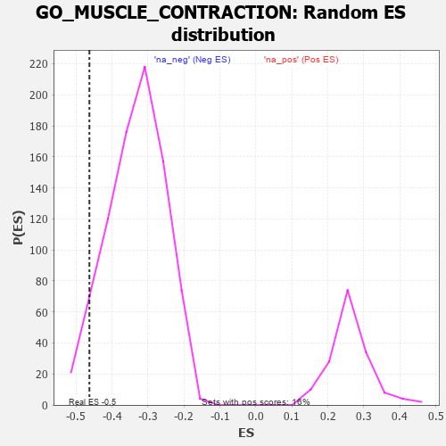

| | | Dataset | 7d |
| Phenotype | NoPhenotypeAvailable |
| Upregulated in class | na_neg |
| GeneSet | GO_MUSCLE_CONTRACTION |
| Enrichment Score (ES) | -0.46279785 |
| Normalized Enrichment Score (NES) | -1.3856636 |
| Nominal p-value | 0.061904762 |
| FDR q-value | 0.35619506 |
| FWER p-Value | 1.0 |
Table: GSEA Results Summary

Fig 1: Enrichment plot: GO_MUSCLE_CONTRACTION
Profile of the Running ES Score & Positions of GeneSet Members on the Rank Ordered List
| PROBE | GENE SYMBOL | GENE_TITLE | RANK IN GENE LIST | RANK METRIC SCORE | RUNNING ES | CORE ENRICHMENT | | 1 | CSRP3 | | | 161 | 1.186 | 0.0153 | No |
| 2 | SMAD5 | | | 231 | 0.979 | 0.0360 | No |
| 3 | TBX20 | | | 267 | 0.880 | 0.0580 | No |
| 4 | TNNC2 | | | 315 | 0.795 | 0.0760 | No |
| 5 | SRF | | | 542 | 0.615 | 0.0659 | No |
| 6 | SETD3 | | | 754 | 0.544 | 0.0556 | No |
| 7 | SLMAP | | | 1744 | 0.346 | -0.0589 | No |
| 8 | GATA4 | | | 1837 | 0.330 | -0.0606 | No |
| 9 | SNTB1 | | | 2767 | 0.188 | -0.1723 | No |
| 10 | DAPK3 | | | 2880 | 0.169 | -0.1814 | No |
| 11 | TAZ | | | 2933 | 0.161 | -0.1831 | No |
| 12 | TLN1 | | | 3030 | 0.145 | -0.1909 | No |
| 13 | SMAD7 | | | 3369 | 0.093 | -0.2308 | No |
| 14 | SYNM | | | 3498 | 0.078 | -0.2446 | No |
| 15 | GLRA1 | | | 3957 | 0.001 | -0.3024 | No |
| 16 | PDE4B | | | 4089 | -0.022 | -0.3183 | No |
| 17 | MTOR | | | 4114 | -0.025 | -0.3206 | No |
| 18 | PLCE1 | | | 4127 | -0.028 | -0.3213 | No |
| 19 | STAC | | | 4327 | -0.064 | -0.3445 | No |
| 20 | ADRB2 | | | 4352 | -0.068 | -0.3455 | No |
| 21 | GRIP2 | | | 4372 | -0.071 | -0.3457 | No |
| 22 | NMUR2 | | | 4646 | -0.127 | -0.3764 | No |
| 23 | MYLK | | | 4651 | -0.128 | -0.3730 | No |
| 24 | CNN1 | | | 4727 | -0.144 | -0.3782 | No |
| 25 | P2RX4 | | | 4813 | -0.161 | -0.3841 | No |
| 26 | DLG1 | | | 4860 | -0.169 | -0.3848 | No |
| 27 | DRD2 | | | 5088 | -0.221 | -0.4068 | No |
| 28 | SCN1A | | | 5260 | -0.261 | -0.4206 | No |
| 29 | NPY2R | | | 5331 | -0.281 | -0.4210 | No |
| 30 | ACTN3 | | | 5486 | -0.315 | -0.4310 | No |
| 31 | SPHK1 | | | 5576 | -0.339 | -0.4320 | No |
| 32 | ADA | | | 5798 | -0.405 | -0.4478 | No |
| 33 | KCNQ1 | | | 5918 | -0.441 | -0.4495 | Yes |
| 34 | ACTN2 | | | 5960 | -0.458 | -0.4410 | Yes |
| 35 | TPM2 | | | 5970 | -0.460 | -0.4283 | Yes |
| 36 | STAC2 | | | 5987 | -0.466 | -0.4163 | Yes |
| 37 | ROCK1 | | | 6152 | -0.520 | -0.4214 | Yes |
| 38 | TPM1 | | | 6226 | -0.545 | -0.4142 | Yes |
| 39 | HSBP1 | | | 6273 | -0.562 | -0.4031 | Yes |
| 40 | GALR2 | | | 6355 | -0.599 | -0.3954 | Yes |
| 41 | BBS2 | | | 6383 | -0.608 | -0.3805 | Yes |
| 42 | TRPM4 | | | 6390 | -0.612 | -0.3629 | Yes |
| 43 | DYSF | | | 6481 | -0.654 | -0.3546 | Yes |
| 44 | SMTN | | | 6510 | -0.666 | -0.3381 | Yes |
| 45 | NMUR1 | | | 6821 | -0.828 | -0.3524 | Yes |
| 46 | MYH11 | | | 6905 | -0.870 | -0.3367 | Yes |
| 47 | GHSR | | | 6937 | -0.894 | -0.3138 | Yes |
| 48 | SCN4A | | | 6955 | -0.910 | -0.2886 | Yes |
| 49 | HCN4 | | | 7260 | -1.134 | -0.2929 | Yes |
| 50 | ANK2 | | | 7298 | -1.170 | -0.2624 | Yes |
| 51 | GPD1L | | | 7343 | -1.215 | -0.2314 | Yes |
| 52 | CALM1 | | | 7567 | -1.499 | -0.2145 | Yes |
| 53 | KCNN2 | | | 7629 | -1.611 | -0.1738 | Yes |
| 54 | PDE4D | | | 7764 | -1.944 | -0.1323 | Yes |
| 55 | CALM3 | | | 7869 | -2.525 | -0.0696 | Yes |
| 56 | CAV3 | | | 7896 | -2.739 | 0.0095 | Yes |
Table: GSEA details [plain text format]

Fig 2: GO_MUSCLE_CONTRACTION: Random ES distribution
Gene set null distribution of ES for GO_MUSCLE_CONTRACTION